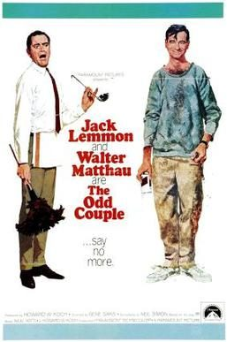

The Odd Couple
Starring: Jack Lemmon, Walter Matthau, John Fiedler
Director: Gene Saks
Writer: Neil Simon
Producer: Howard W. Koch
The Odd Couple is a 1968 American comedy film directed by Gene Saks, produced by Howard W. Koch and written by Neil Simon, based on his 1965 play. It stars Jack Lemmon and Walter Matthau as two divorced men—neurotic neat-freak Felix Ungar and fun-loving slob Oscar Madison—who decide to live together.
Trivia
- Nominated for: Academy Award for Best Film Editing; Academy Award for Best Writing, Adapted Screenplay.
- Based on The Odd Couple (1965 stage play by Neil Simon).
- The Odd Couple was originally produced for Broadway, and the original cast starred Art Carney as Felix and Walter Matthau as Oscar.
- At one point, Frank Sinatra (as Felix) and Jackie Gleason (as Oscar) were reportedly considered for the film version.
- Dick Van Dyke and Tony Randall were also among those considered for the role of Felix, and Mickey Rooney and Jack Klugman (who later replaced Matthau as Oscar on Broadway) were among those considered to portray Oscar in the film.
Filming Locations
- Hotel Flanders
- The scene at Shea Stadium, which also featured Heywood Hale Broun, was filmed before the start of a real game between the New York Mets and the Pittsburgh Pirates on June 27, 1967.
Previous Showings
1 Run • 1 Festival
All runs on record (1):
- July 18 - 20, 2001Jack Lemmon Film Festivalw/ The April Fools